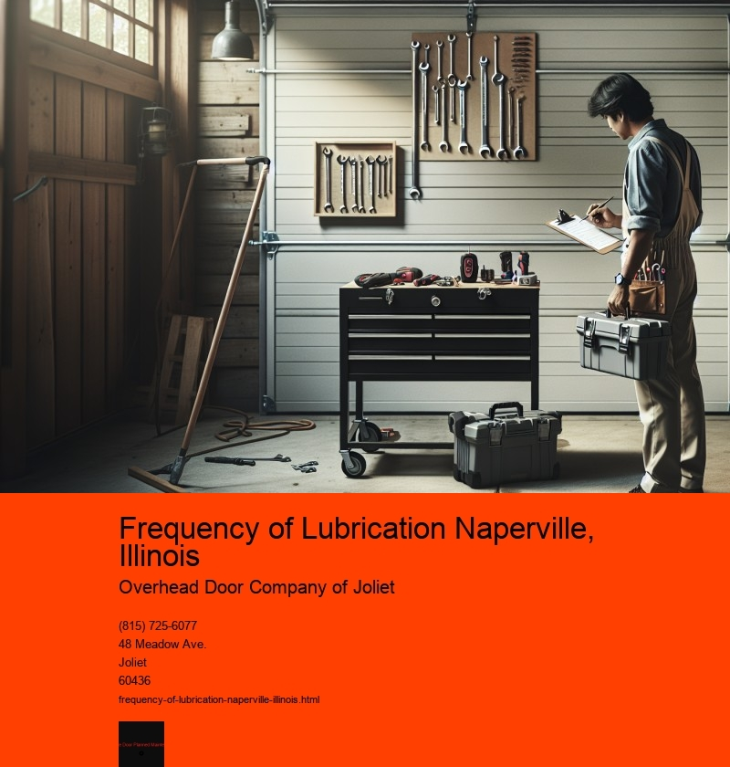

The Importance of Regular Lubrication in Naperville, Illinois
In the bustling suburb of Naperville, Illinois, residents and businesses alike rely heavily on the smooth operation of machinery and vehicles. Whether its the family car, industrial equipment, or even the bicycle used for leisurely rides through the scenic Riverwalk, one factor remains crucial to their performance and longevity: regular lubrication. Understanding the frequency of lubrication and adhering to a consistent maintenance schedule can prevent costly repairs, enhance efficiency, and ensure the safety of both operators and bystanders.
Lubrication serves as the lifeblood of any mechanical system. It reduces friction, minimizes wear and tear, and protects components from corrosion. For residents of Naperville, where weather conditions can vary significantly with hot summers and cold, snowy winters, maintaining proper lubrication becomes even more critical. Temperature fluctuations can affect the viscosity of lubricants, making regular checks and adjustments necessary to ensure optimal performance.
For vehicle owners in Naperville, regular oil changes are a familiar aspect of maintenance. Most automotive experts recommend changing the engine oil every 3,000 to 5,000 miles, depending on the type of oil used and the vehicles make and model. However, lubrication needs extend beyond just the engine. Transmission fluid, brake fluid, and even power steering fluid require regular attention. Keeping these systems well-lubricated not only improves performance but also extends the lifespan of the vehicle.
Industrial operations in Naperville also depend heavily on proper lubrication to keep machinery running smoothly. Factories and plants often operate 24/7, and any downtime due to mechanical failure can lead to significant financial losses. Therefore, establishing a routine lubrication schedule is vital. This includes regular checks and maintenance of bearings, gears, and other moving parts. The use of high-quality lubricants and adherence to manufacturer guidelines can prevent unexpected breakdowns and extend the life of expensive equipment.
In addition to vehicles and industrial machinery, even bicycles benefit from regular lubrication. For Naperville residents who enjoy cycling along the numerous trails and parks, keeping the chain and gears properly lubricated ensures a smooth and enjoyable ride. A well-lubricated bicycle also reduces the risk of unexpected breakdowns, allowing riders to explore the scenic beauty of Naperville without interruption.
The frequency of lubrication depends on several factors, including the type of equipment, usage patterns, and environmental conditions. Creating a maintenance schedule tailored to these factors is essential. For many, consulting with professionals or referring to the equipment's manual can provide valuable guidance on the appropriate intervals for lubrication.
In conclusion, the frequency of lubrication in Naperville, Illinois, is not merely a matter of routine maintenance; it is a critical aspect of ensuring the longevity and efficiency of vehicles and machinery. By understanding the importance of regular lubrication and adhering to recommended schedules, Naperville residents can prevent costly repairs, improve performance, and contribute to a safer and more efficient community. Whether through professional services or personal diligence, maintaining the proper lubrication of mechanical systems is an investment in reliability and peace of mind.
